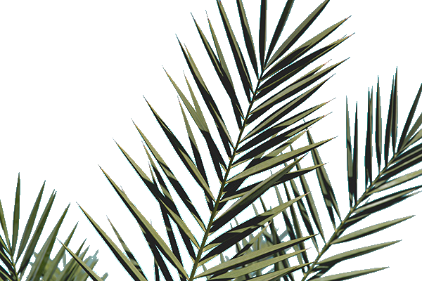
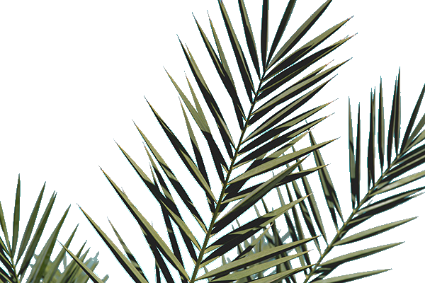

Порядок отображения элементов на странице называется потоком документа. Блочные элементы отображаются как прямоугольные области, идущие друг за другом сверху вниз, а строчные элементы располагаются сверху вниз и слева направо и при необходимости переносятся на новую строку. Элементы можно вкладывать друг в друга. Чем раньше в коде расположен элемент, тем выше он расположен на странице. Некоторые типы элементов могут вести себя в потоке более сложно. Например, они могут располагаться в несколько колонок, как блочно-строчные элементы. Эти типы проходились в курсе «Блочная модель документа». Любой элемент, который находится в потоке, занимает на странице свою собственную площадь и, если надо, отталкивает от себя соседей с помощью маргинов. CSS-свойство position задает режим позиционирования элементов. Значением по умолчанию является static, которое означает «обычное позиционирование». Значение relative обозначает «относительное позиционирование». Относительно спозиционированный элемент можно перемещать относительно его исходного положения. Относительно спозиционированный элемент остается в потоке документа, а при его перемещении наблюдаются интересные эффекты. Для начала просто зададим относительное позиционирование выбранному блоку. При абсолютном позиционировании элемент не существует в потоке документа и его положение задаётся относительно краёв браузера. Задать этот тип можно через значение absolute свойства position. Координаты указываются относительно краёв окна браузера, называемого «видимой областью». Фиксированное положение слоя задаётся значением fixed свойства position и по своему действию похоже на абсолютное позиционирование. Но в отличие от него привязывается к указанной свойствами left, top, right и bottom точке на экране и не меняет своего положения при прокрутке веб-страницы. Ещё одна разница от absolute заключается в том, что при выходе фиксированного слоя за пределы видимой области справа или снизу от неё, не возникает полос прокрутки.
 
